Balloon Kids Customs Special Delivery Balloon 的 HODLR 可以要求 Ruby da Great 定制设计的 Balloon Kid。 定制设计的范围从 0.007 到 0.015 ETH 多边形，具体取决于设计中要求的特征数量。 Ruby 才 9 岁，请耐心等待您的请求。我
Bally Gang OfficiaI Bally Gang NFT 是 8,888 个 NFT 的集合，包含现实生活和虚拟实用程序。在具有 300 多个 3D 特征的以太坊区块链上推出，每个 NFT 都是独一无二的。Bally Gang NFT 持有者是一个独
Bally Gang OfficiaI Bally Gang NFT 是 8,888 个 NFT 的集合，包含现实生活和虚拟实用程序。在具有 300 多个 3D 特征的以太坊区块链上推出，每个 NFT 都是独一无二的。Bally Gang NFT 持有者是一个独
Bally Gang OfficiaI Bally Gang NFT 是 8,888 个 NFT 的集合，包含现实生活和虚拟实用程序。在具有 300 多个 3D 特征的以太坊区块链上推出，每个 NFT 都是独一无二的。Bally Gang NFT 持有者是一个独
Banana Fund 香蕉基金/养老基金是我们感谢和回馈猩猩爷爷的方式。Grandpa Ape 代币是一种 NFT 代币，每月赠送给每个 Grandpa Ape 的钱包。这些代币将用于解锁不同级别的独
Banana Hands 手正是顾名思义 - 10,888 只猿手的集合，经过精心手工制作以匹配风格和属性，BAYC Apes 彻底改变并激发了以太坊区块链上 NFT 收藏品的增长和采用！手是对 BAYC 以及
Banana Heist BH 是 1,428 个 Banana NFT 的集合，是生活在以太坊区块链上的独特数字收藏品。除了一些肮脏的猿类（或者可能是外星人？）吃掉它们之外，还有更多。加入调查，找出是
Banksy - Gorilla in a Pink Mask 班克斯最著名的街头壁画之一“戴粉红色面具的大猩猩”已被分割成 10,000 个部分，每个 NFT 代表它所画的墙壁部分。 这位艺术家的名声在于他从 1990 年代初开始创作的
Banksy Culture 20,000 Banksy，为人民，支持文化，艺术创作的新脑波。 Banksy 文化 NFT - 常见问题（FAQ） ▶ 什么是班克斯文化？ Banksy Culture 是一个 NFT（非同质代币）集合。存储
Banned NFT BANNED 是一个生成艺术 NFT 项目，由 @JakeTheDegen、@iJmillz 和 @ChipWalkerNFT 的独特摄影作品播种。这是一个宣言，社区和伟大源于一个人在逆境中所做
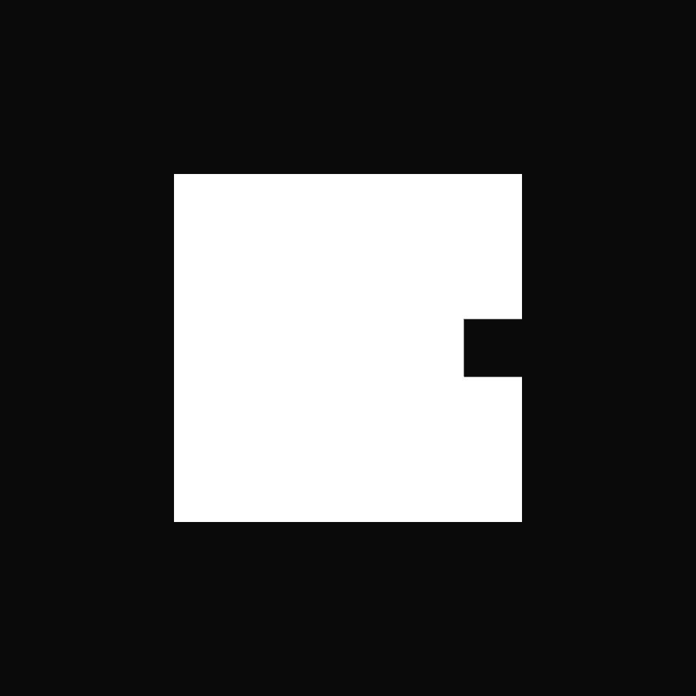 Bapes Genesis Key Official II Bapes Genesis I Key NFT 在过去 7 天内售出 130 次。Bapes Genesis I Key 的总销售额为 85.18 万美元。Bapes Genesis I Key NFT 的平均价格为 655.2 美元。有 1,070 名 Bapes Genesis I Key 所有者，总共拥有 2,071
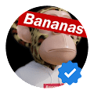 Bapes OfficiaI NFT 我们是 8,888 个 3D 完全渲染的 8k 分辨率 NFT 集合。我们的灵感来自 80 年代末和 90 年代初的街头时尚风格，也融合了一些当前的高端时尚风格。 BapesOfficial NFT NFT - 常见问题（FA
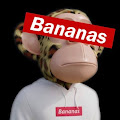 BapesOfficial NFT 我们是 8,888 个 3D 完全渲染的 8k 分辨率 NFT 集合。我们的灵感来自 80 年代末和 90 年代初的街头时尚风格，也融合了一些当前的高端时尚风格。 BapesOfficial NFT NFT - 常见问题（FA
BAPETAVERSE (B)APETAVERSE 是 BAPEFAM 聚集在一起的虚拟世界，将收藏品的目的提升到一个新的水平。从官方的 A BATHING APE®️ 概念化，人猿之王将成为 (B)APETAVERSE 的头条新闻，并首次揭开他的面庞。
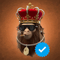 Bapetaverse OfficiaI 过去 7 天内没有出售任何 Bapeverse。 让我们 BAPE 进入 BAPETAVERSE！ BAPE® 为您带来 10,000 个独特的 NFT 3000 个铸币前访问通行证。 不含气体。
BAPETAVERSE OFFIClAL (B)APETAVERSE 是 BAPEFAM 聚集在一起的虚拟世界，将收藏品的目的提升到一个新的水平。从官方的 A BATHING APE®️ 概念化，人猿之王将成为 (B)APETAVERSE 的头条新闻，并首次揭开他的面庞。
BAPETAVERSE OFFIClAL B)APETAVERSE 是 BAPEFAM 聚集在一起的虚拟世界，将收藏品的目的提升到一个新的水平。从官方的 A BATHING APE®️ 概念化，人猿之王将成为 (B)APETAVERSE 的头条新闻，并首次揭开他的面庞。
BAPETAVERSE OFFlClAL (B)APETAVERSE 是 BAPEFAM 聚集在一起的虚拟世界，将收藏品的目的提升到一个新的水平。从官方的 A BATHING APE®️ 概念化，人猿之王将成为 (B)APETAVERSE 的头条新闻，并首次揭开他的面庞。
BAPEZ NFT 过去 7 天没有出售 BAPEZ NFT。 BAPEZ NFT 的旧系列将为即将推出的新系列提供所有者 OG BAPEZ！ BAPEZ NFT NFT - 常见问题（FAQ） ▶ 什么是 BAPEZ NFT？ BAPEZ NFT 是一个 NF
BaQN The Voice BaQN Voice NFT 在过去 7 天内售出 96 次。BaQN The Voice 的总销售额为 281.7 美元。一个 BaQN The Voice NFT 的平均价格为 2.9 美元。有 1,560 名 BaQN The Voice 所有者，总共拥有 8,900 个代币。 BaQN The Voice NFT -
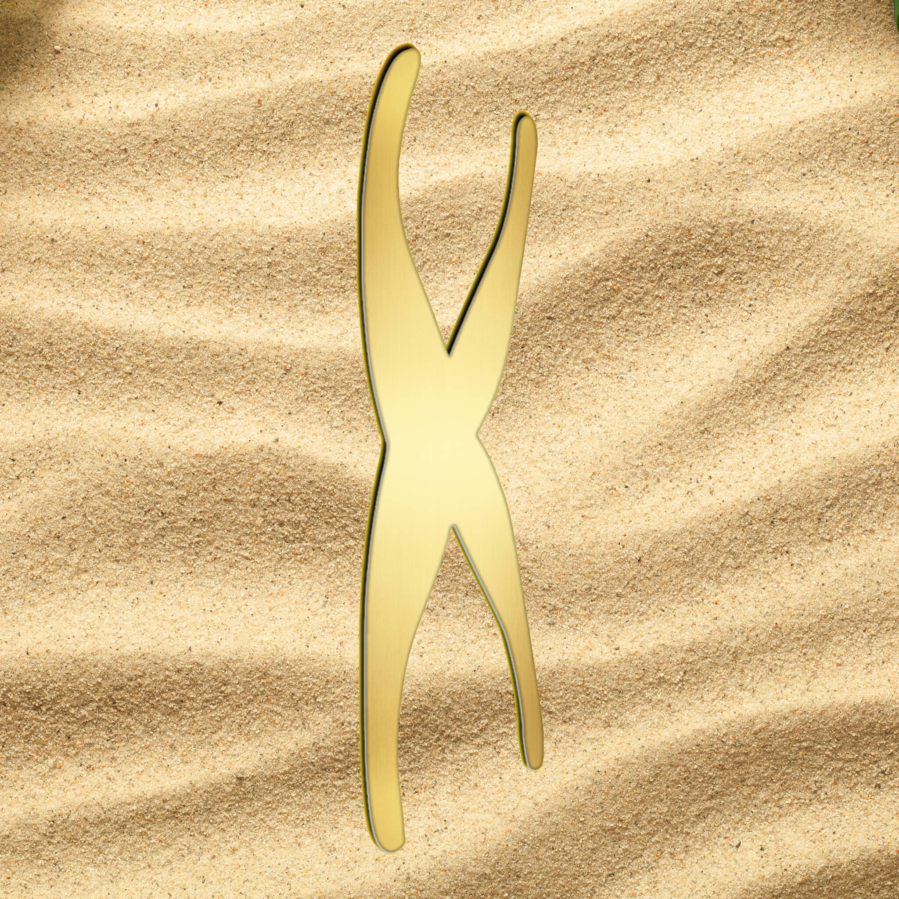 Barefoot Pandemonium Yuga IP 组合中明显没有海盗属性。一些突变体有肩鹦鹉，但除此之外，它们与我们品牌最接近的是一些夏威夷衬衫。 我们希望将 Tikimon 建立为去中心化 Ape IP 世界中的海
Barnyard Fashionistas Official 逃离凄凉的农场生活，发现时尚的 NFT 系列动物！现在，他们已将通过社区和世界各地的时尚鼓励自我表达作为自己的人生使命。 Barnyard Fashionistas Official NFT - 常见问题 (FAQ) ▶ 什么是
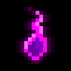 Based Ghouls 基于食尸鬼的 NFT 在过去 7 天内售出 209 次。Based Ghouls 的总销售额为 15.36 万美元。一个 Based Ghouls NFT 的平均价格为 73.5 美元。有 1,913 名 Based Ghouls 所有者，总共拥有 6,667 个代币。 在月
Based Vitalik Official Collection BASΞD VITALK 是 4962 个生成 NFT 的集合，与 Vitalik Buterin 本人一样古怪且毫无歉意。BASΞD VITALIK 是对生成 PFP NFT 的超级野兽派，是对加密版税的真正敬意。 基于 VITALK NFT - 常见问
BASKERVILLE CLUB OFFlClAL Baskerville Club Genesis 是 333 个 NFT 的高端 3D 集合。持有 Baskerville NFT 意味着对您的头像拥有完全的所有权和商业权利。巴斯克维尔俱乐部已准备好征服猿的统治地位。你是猿猴还是革命的
Baskerville Club: Genesis Baskerville Club Genesis 是 333 个 NFT 的高端 3D 集合。持有 Baskerville NFT 意味着对您的头像拥有完全的所有权和商业权利。巴斯克维尔俱乐部已准备好征服猿的统治地位。你是猿猴还是革命的
Basketball Headz Curry Brand 正在统一 Metaverse 中的篮球和积极社区。 介绍 Basketball Headz - 一个限量版 3D 生成 NFT 项目，它统一了多个社区来混合和匹配你最喜欢的 NFT 特征。实用程序包括独家访问 Curry 品牌
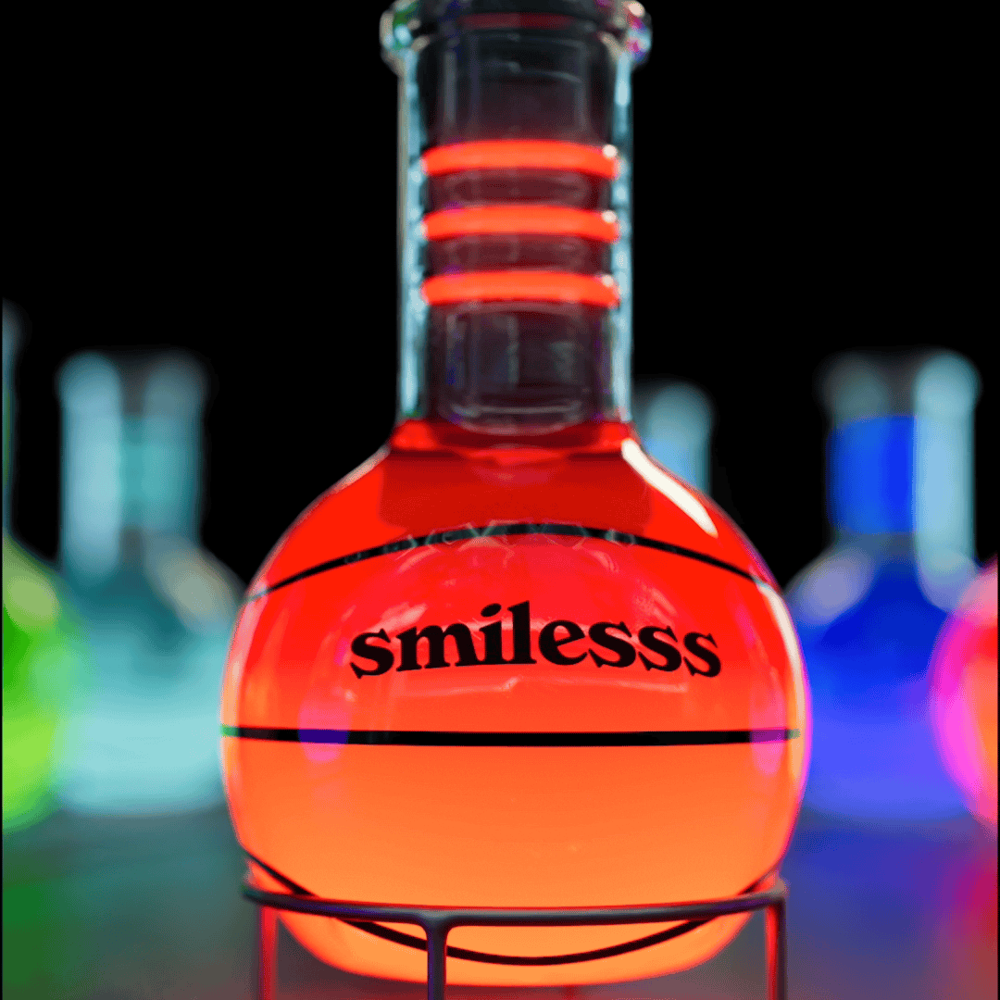 Basketball Headz Serums 随着 Curry 合作伙伴 Serums 的推出，我们从改变游戏走向改变游戏。我们的 Serums 来自 Metaverse 中一些最令人兴奋的社区，旨在与 Curry NF3 篮球结合时产生一些真正赢得比赛的结果。虽
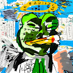 BASQKEK EDITION 1155 BASQKEK EDITION 1155 NFT 在过去 7 天内售出 8 次。BASQKEK EDITION 1155 的总销售额为 889.22 美元。一份 BASQKEK EDITION 1155 NFT 的平均价格为 111.2 美元。有 97 位 BASQKEK EDITION 1155 所有者，总共拥有 12 个代币。 BASQKEK
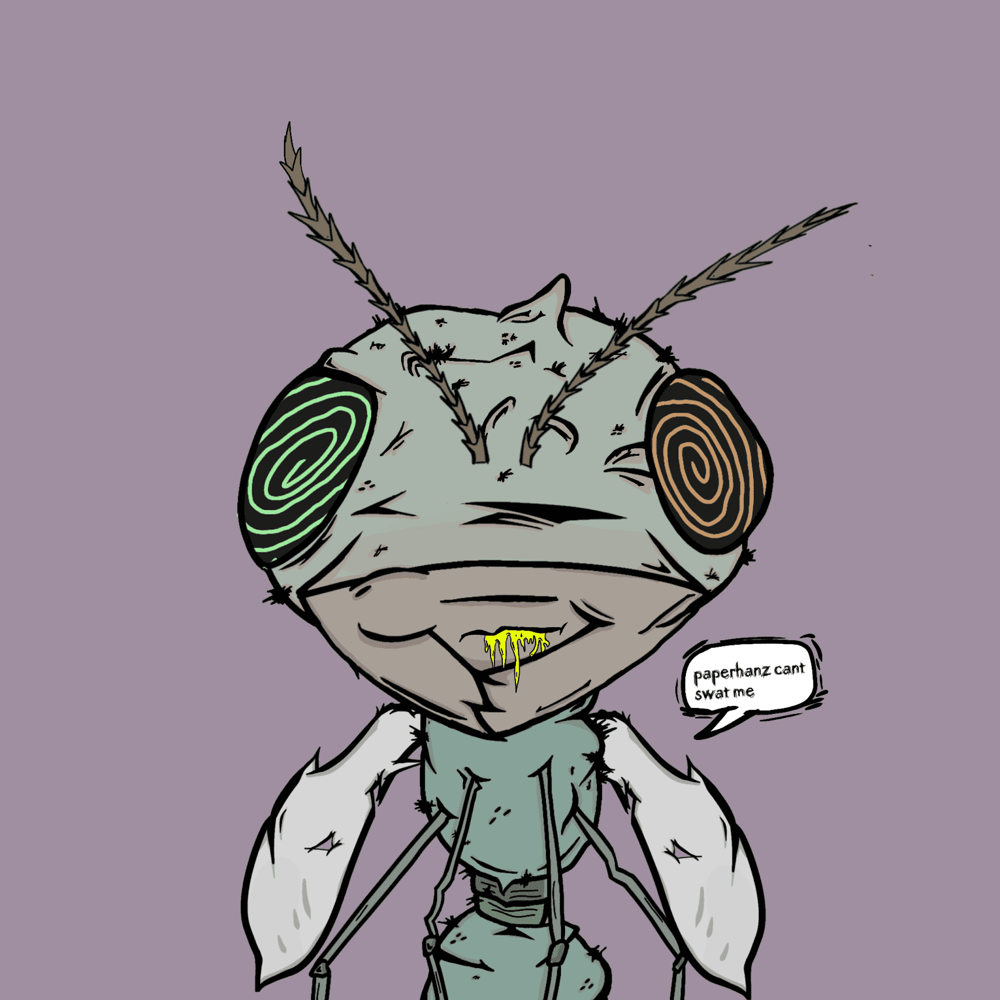 BastardBugz.Wtf BastardBugz.Wtf NFT - 常见问题（FAQ） ▶ 什么是 BastardBugz.Wtf？ BastardBugz.Wtf 是一个 NFT（不可替代令牌）集合。存储在区块链上的数字艺术品集合。 ▶ 存在多
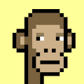 Basterd Apes 5K 像素猿准备夺取以太坊区块链上最酷的 8 位像素猿项目的宝座。 加入奇妙的旅程，成为 BASTERDS 社区的一员，并与我们一起决定这个项目的去向。由您决定！ Basterd Apes NFT
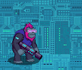 Battle Ape Game | Weapons 8888 种战斗猿类武器在 MetaJungle 中闪耀，为 $KONGZ 而战。你会成为丛林中的金刚吗？Battle Ape Game 是第一个在 ETH 上的浏览器内、即用型、基于 NFT 的跑步游戏。拥有战斗猿
Battle Bears 来自前 50 名游戏系列的官方 BATTLE BEARS® NFT 合集，下载量达 4000 万次。每个 NFT 都可以在所有即将推出的 BATTLE BEARS® 和 BattleCoin 游戏中使用。传奇和彩色 NFT 包括限量
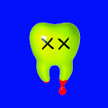 Battle Growlies Official 由 Onem 和 CreuD 创建的 5,000 个 NFT 的酷炫和新鲜集合。Battle Growlies 是独一无二的 AI 生成系列，其中讲故事和 3D 艺术融合成一个多彩的宇宙。 Battle Growlies 官方 NFT - 常见问题（F
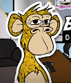 BAYC Diamond Pepes Office Space DiamondPepes办公空间卡 NFT 分发给 BAYC Otherside 铸币厂的前 1000 家失败的天然气消费最高的铸币厂。 这些卡可在即将推出的 0.5 ETH Pepezuki 铸币厂兑换 20% 的折扣 BAYC Diamond Pepes
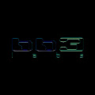 bb3 explorer badge bb3 to Planet Earth 你收到了吗？如果您听到此消息，请确保来自地球的著名探险家仅在计划完成后才能收到徽章。绝对不能将探险家徽章交给其他任何人，这一点至关重
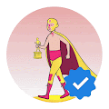 BBRC - IVY BOYS EDITION SPECIAL Aaron Chang 的 IVY BOYS 是 BBRC Studios 的创始项目，也是众多创作者合作中的第一个。我们的系列包括 7,777 个实用的收藏品，这些收藏品具有各种常春藤盟校和裁缝灵感的特征。IV
BBRC Ivy Boys Official Aaron Chang 的 IVY BOYS 是 BBRC Studios 的创始项目，也是众多创作者合作中的第一个。我们的系列包括 7,777 个实用的收藏品，这些收藏品具有各种常春藤盟校和裁缝灵感的特征。IV
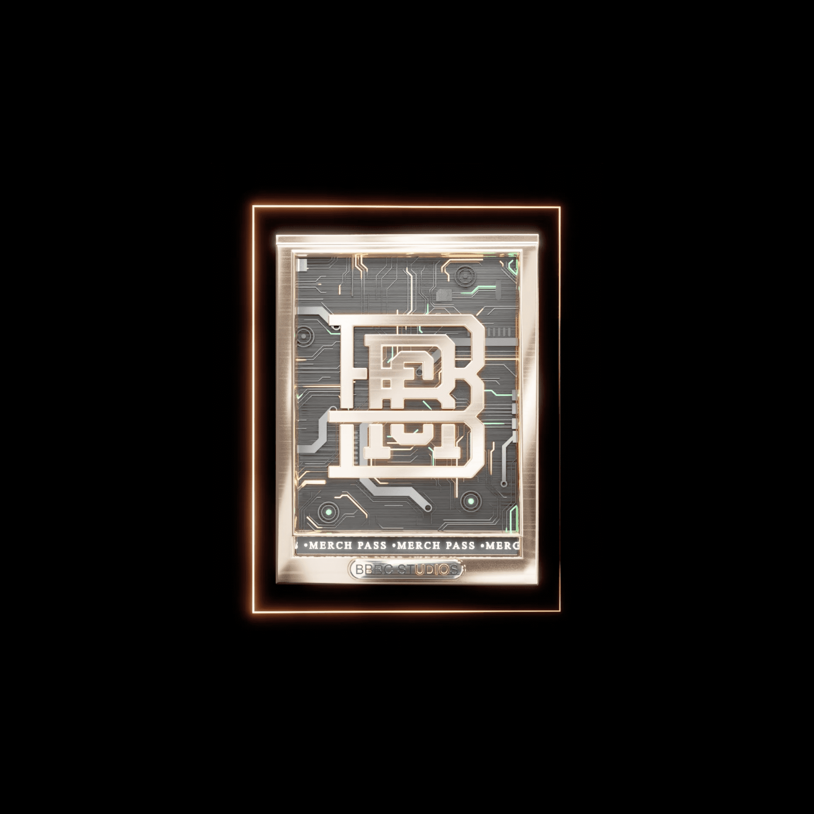 BBRC MERCH PASS 用黄金铸造的 BBRC Continental Coin 是信任、荣誉和尊重的物理代表。它们代表了确保商品和服务交换的社会契约。深深植根于严格密码的承诺，这些硬币是您的归属证明，拥
BBRC NFT Official Collection Presale Aaron Chang 的 IVY BOYS 是 BBRC Studios 的创始项目，也是众多创作者合作中的第一个。我们的系列包括 7,777 个实用的收藏品，这些收藏品具有各种常春藤盟校和裁缝灵感的特征。IV
BBRC Official Aaron Chang 的 IVY BOYS 是 BBRC Studios 的创始项目，也是众多创作者合作中的第一个。我们的系列包括 7,777 个实用的收藏品，这些收藏品具有各种常春藤盟校和裁缝灵感的特征。IV
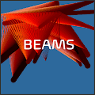 BEAMS NFT 梁。创建的生成 NFT 类似于光的反射和折射。现象系列的第 2 部分 欢迎来到我的页面，我从 2021 年 1 月开始从事 NFT 领域，当时我与人共同创立了 Pixa NFT，这是一个
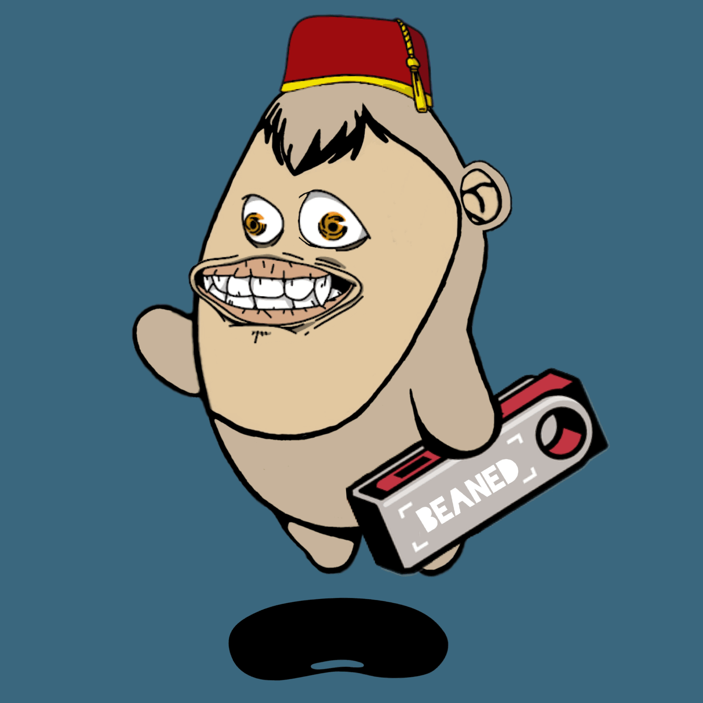 Beaned Ape Yacht Club 因为我们是 BEANED！欢迎来到 Beaned Ape 游艇俱乐部；许多中的第一个。所有的艺术和开发工作都由一个 Degen 完成。持有人将能够从下一个即将推出的系列中领取
Beaniebros.xyz 一个有趣的无檐小便帽兄弟系列 Beaniebros.xyz NFT - 常见问题（FAQ） ▶ 什么是 Beaniebros.xyz？ Beaniebros.xyz 是一个 NFT（Non-fungible token
BeanieGivesBack 铸就你的 NFT 历史！收集 4269 个独特的豆豆粉丝艺术！ 前 269 个可以一次免费铸造 1 个。对不起，鲸鱼，这是给社区的！ 免费 269 之后的价格将为 Ξ0.02。 没有路线


APETAVERSE 是 BAPEFAM 聚集在一起的虚拟世界")
APETAVERSE 是 BAPEFAM 聚集在一起的虚拟世界")